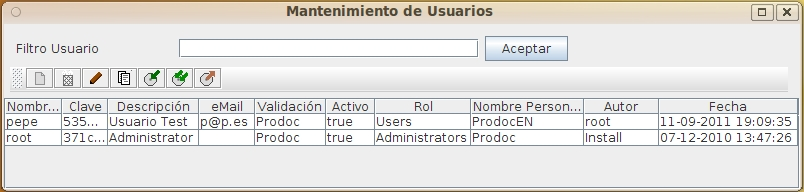

Lista Usuarios
Al seleccionar la opción de administrar Usuarios, aparecerá la pantalla de listado de Usuarios. Esta pantalla permite realizar el mantenimiento de todos los Usuarios del sistema.
Independientemente de las funciones del usuario o de su forma de validación, en OPD es imprescindible dar de alta el usuario en el sistema. Una vez dado de alta, podrá asociarsele a grupos y ACL para definir sus funciones y permitirle el acceso a recursos.
No será posible dar de baja un usuario si tiene bloqueados documentos, sin embargo existe la posibilidad de desactivarlo, lo que impide su acceso al sistema sin perder información del usuario.
Para filtrar los Usuarios que se desea revisar, basta introducir parte del nombre en el cuadro de texto y pulsar el botón. La lista de Usuarios que cumplen las condiciones aparecerá en la tabla de resultados.
Si se pulsa el botón sin introducir ningún valor se visualizará todos los elementos sobre los que tenga permiso el usuario actual. La tabla de resultados muestra los datos:
- Nombre identificativo
- Clave de acceso (aparecerá codificada)
- Descripción del Usuario
- Correo electrónico
- Nombre del sistema de autenticación asignado al usuario (Ver Sistemas de Autenticación)
- Indicador de si está activo
- Nombre del rol asignado al usuario (Ver Roles)
- Nombre de la personalización asignada al usuario (Ver Personalizaciones)
- Nombre del último usuario que modificó la definición del Usuario
- Fecha y hora de la última modificación

Esa tabla de resultados puede ordenarse seleccionando la cabecera de cada columna. Puede también cambiarse el tamaño de cada columna arrastrando la línea separadora de las cabeceras
Sobre la tabla de resultados se dispone de varios botones que permiten realizar operaciones sobre el elemento seleccionado. Las operaciones disponibles son:
- Añadir un nuevo elemento
-
 Eliminar el elemento seleccionado (Siempre que no se esté utilizando)
Eliminar el elemento seleccionado (Siempre que no se esté utilizando)
-
 Modificar el elemento seleccionado
Modificar el elemento seleccionado
-
 Crear un nuevo elemento como copia del elemento seleccionado
Crear un nuevo elemento como copia del elemento seleccionado
-
 Exportar el elemento seleccionado
Exportar el elemento seleccionado
-
 Exportar todos los elementos listados
Exportar todos los elementos listados
-
 Importar desde archivo uno o más elementos previamente guardados
Importar desde archivo uno o más elementos previamente guardados
- Exportar todos los elementos listados en formato CSV, para su importación en Hojas de Cálculo o BBDD
Debe tenerse en cuenta al exportar e importar que algunos elementos pueden tener dependencia de otros, por lo que debe exportarse todos los elementos relacionados y en el momento de importarse hacerlo en el orden adecuado
En caso de producirse un error (carencia de permisos del usuario, incoherencia de los datos, etc), la operación se cancela y se comunicará al usuario el motivo del error.
Ver: Mantenimiento Usuarios
Índice Ayuda OpenProdoc